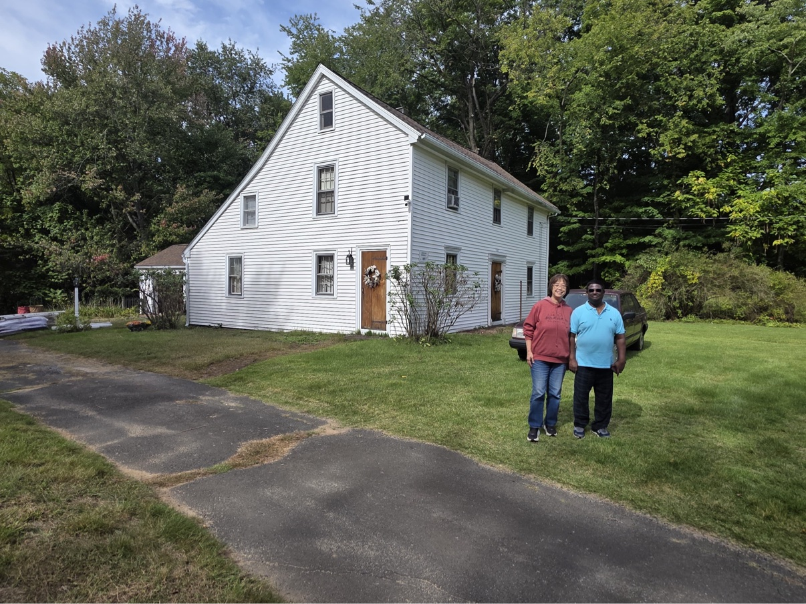
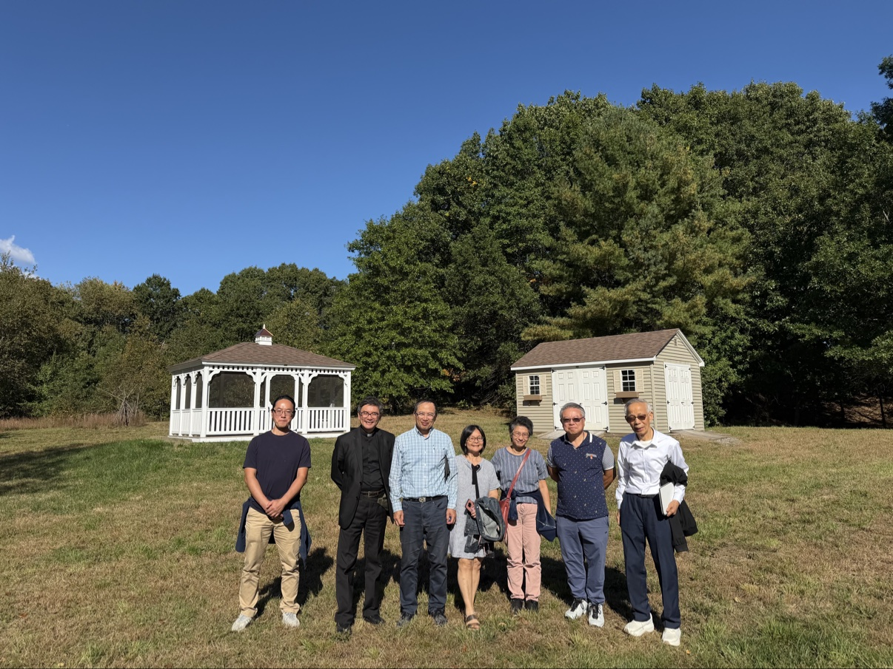
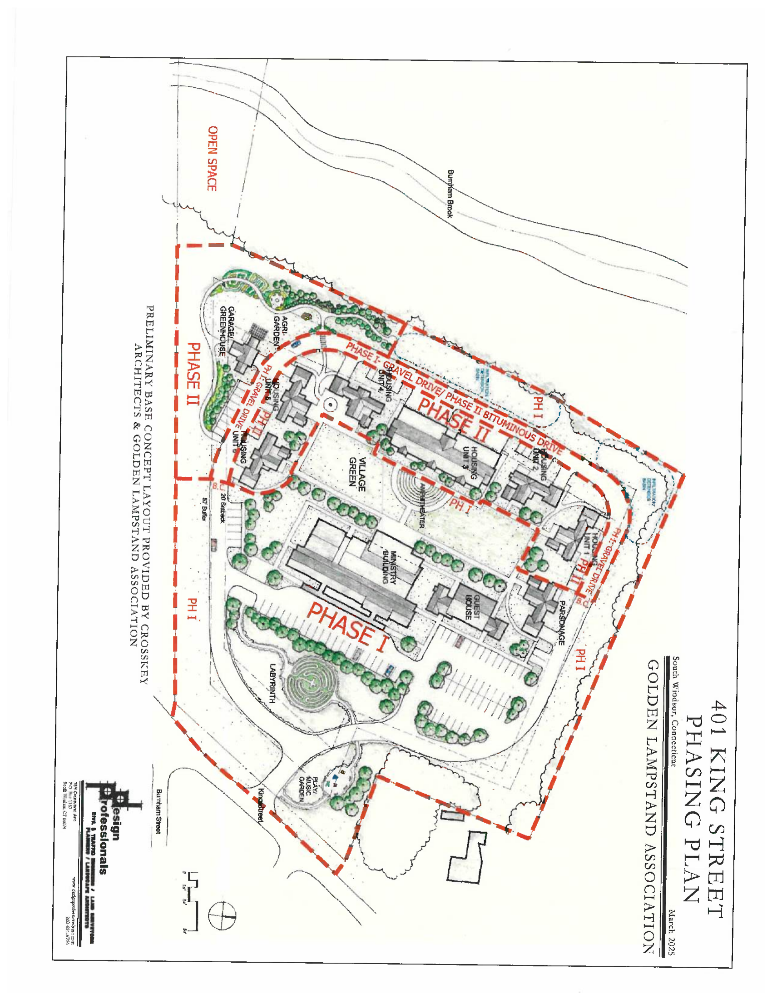

GOLDEN LAMPSTAND ASSOCIATION · SOUTH WINDSOR, CONNECTICUT
Their mission crossed the ocean. Ours begins at home.
At 437 & 401 King Street in South Windsor, Connecticut — on land that carries the memory of America's Great Awakening — Golden Lampstand Association is building a ten-acre campus: a parsonage, a retreat house, and a ministry center. A place where caregivers are formed, and where missionaries find rest on their way home.
Become a Supporter See the PlaceTwo neighboring parcels on King Street. One holds our present; the other holds our future.


Phase I: parsonage, ministry center, guest house, village green — with room to grow in Phase II.

Phasing plan, 401 King Street — Design Professionals, Inc., March 2025
A pastoral center in the form of a home — where good work is incubated in the living room. Yale itself began this way: its first classes were taught in a parsonage at Killingworth, Connecticut. Here, ministry will be conceived at the table, prayed over by the fire, and sent out the front door.
An eight-room guest house — a quiet haven where missionaries, pastors, and weary servants of God can rest, pray, and be renewed.
A center for training and sending — where caregivers are formed in the way of Christ and prepared for the work of mission.
In the 19th century, thirteen men and women from New England, upstate New York, and New Jersey crossed the ocean to bring the Gospel — and works of mercy — to China. Their care crossed the ocean. Now the call has come home: on this land in South Windsor, we will build a place that trains caregivers — and welcomes them home.
Whether through prayer, giving, or volunteering — let us know you would like to be part of this revival plan. One of our coworkers will contact you personally.
"For where two or three gather in my name, there am I with them." MATTHEW 18 : 20